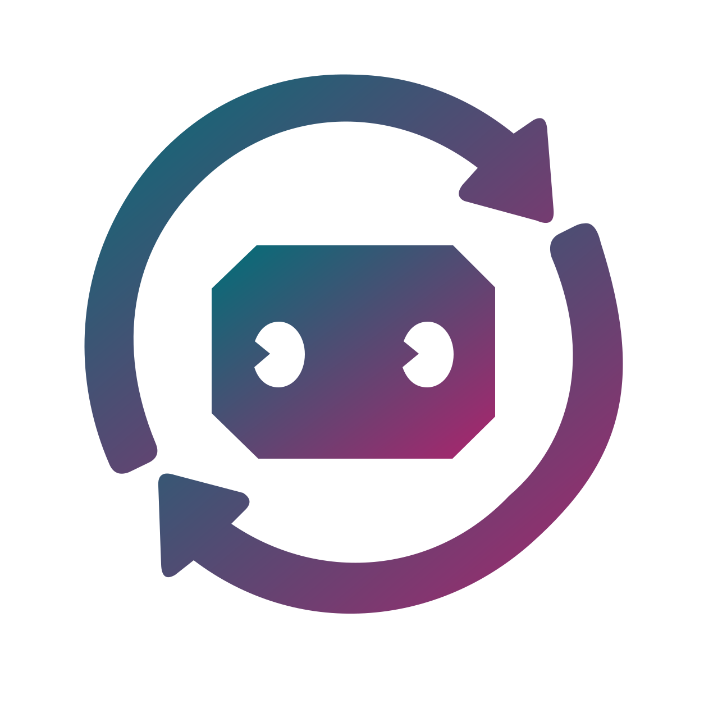
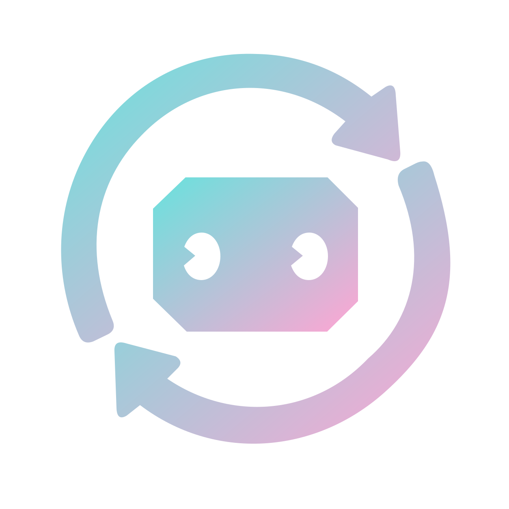
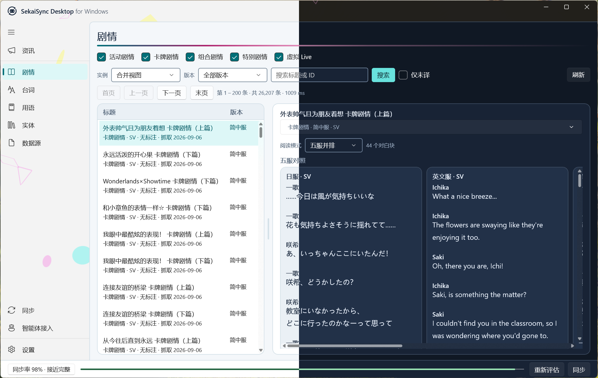
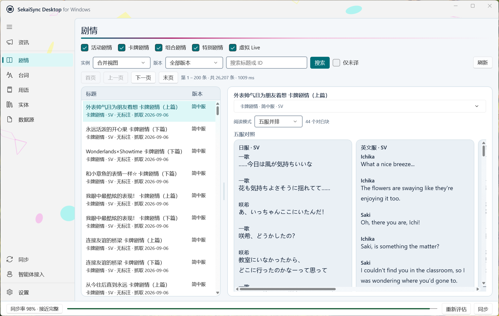
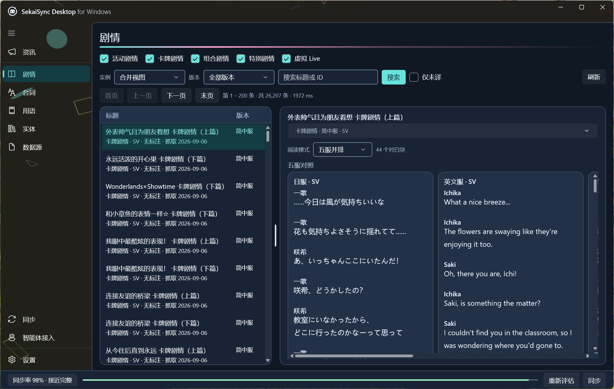

SekaiSync
面向内容创作与资料考据
你的本地
《世界计划》
数据库
面向内容创作与考据的本地资料库。
SekaiSyncMIT 许可证 · 早期项目


背景与检索需求
创作与考据中的
资料查证
01
剧情溯源台词出处与上下文
02
译名对照不同区服的名称与用语
03
设定查证角色、卡牌与活动资料
建立本地索引，减少重复查找。
同人创作 · 视频制作 · 设定考据
数据同步与本地存储
同步多区服资料，
建立本地索引
本地资料库
store/
五区服资料同步到本地，
供命令行与接入工具查询。
JPENCNTCKR
01
游戏元数据
角色、卡牌、歌曲与活动
02
跨语言译名
各区服名称对照
03
官方公告
同步并归档本地记录
剧情正文需另行配置来源，并遵守使用条款。
不捆绑图片、音频或 Live2D 等游戏资产
CLI 查询示例
命令行检索：
跨语言译名对照
译名查询示例
星乃一歌
Hoshino Ichika
根据本地映射，返回目标语言名称。
英文译名查询命令
python -m sekaisync resolve
--query "星乃一歌"
--target-language en基于本地已同步的数据。
命令示例来自项目文档 · 不是终端执行截图
MCP 接入与资料检索
通过 MCP 接入，
为 AI 提供本地资料
查询示例
“请核对星乃一歌的译名，
并引用已收录的剧情。”
MCP
向支持 MCP 的 AI 工具
提供本地查询接口。
SekaiSync / MCP 查询工具调用示意
命中本地资料
返回译名、元数据
或已缓存的正文。
内容未覆盖
如实报告数据缺漏。
只查询本地已同步内容 · 关键考据结论仍需核对游戏原文。
桌面客户端与插件集成
WinUI 3
桌面资料工作台
Windows 原生客户端
- 剧情浏览与检索
- 多语言剧情并排对照
- 同步与本地服务管理
浅色暗色



窗口实图 · 数量与同步状态仅代表截图当时的本地数据
项目阶段与维护方向
正在早期迭代中，
同步和检索功能持续完善
数据覆盖与使用体验仍需完善。
欢迎反馈可复现的问题与数据偏差。
01
早期项目 · 持续迭代基础功能
译名校验测试文档
开源协作与共建
开放源码，
欢迎参与维护
MIT 许可证 · 源码与文档公开
Staromoinoki/sekaisync
Forkomoinoki/sekaisync/fork
Issueomoinoki/sekaisync/issues
Pull Requestomoinoki/sekaisync/pulls
关注版本进展
https://github.com/定制工具与工作流
https://github.com/反馈缺陷与需求
https://github.com/贡献代码、译名与文档
https://github.com/https://github.com/omoinoki/sekaisync二维码对应各入口，可暂停扫码。
让《世界计划》创作更简单